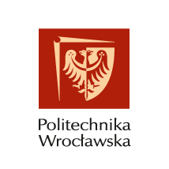

Łączymy medycynę opartą na dowodach (EBM) z innowacyjnym biznesem. Udostępniamy infrastrukturę badawczą, technologie VR i tworzymy konsorcja do wspólnych projektów B+R i edukacyjnych.
Budujemy neuroinnowacje w oparciu o silne partnerstwa z wiodącymi polskimi uczelniami i instytucjami naukowymi.

Współpracujemy z Politechniką Wrocławską w zakresie inżynierii biomedycznej, neurotechnologii, sztucznej inteligencji w zdrowiu i cyfrowych bliźniaków zdrowia — w duchu medycyny 3P: Prewencyjnej, Spersonalizowanej i Precyzyjnej.

To partnerstwo opiera się na wspólnej wizji rozwoju, w której nauka, technologia i praktyka tworzą spójną całość. Współpraca obejmuje obszar psychologii i informatyki oraz ich zastosowania w nowoczesnych rozwiązaniach cyfrowych dla zdrowia i medycyny.
Studenci otrzymują możliwość udziału w warsztatach, stażach i projektach praktycznych, a także w mentoringu naukowym prowadzonym przez prof. Sebastiana Kraszewskiego. Dzięki temu mogą rozwijać kompetencje przyszłości w otoczeniu łączącym środowisko akademickie i neuroinnowacyjne.
Nasze centrum to środowisko testowe i wdrożeniowe dla neurotechnologii. Nadzór naukowy pełni dr hab. inż. Sebastian Kraszewski, prof. PWr.
Fotel Zero-Gravity, VRET i ciągły biofeedback HRV w zamkniętej pętli — głęboka neuroregulacja.
Systemy pomiarowe HRV, GSR i EEG w czasie rzeczywistym.
Fotobiomodulacja (PBM), wibroakustyka, PEMF.
Terapia tlenowa hiperbaryczna i regeneracja komórkowa.
Kompleksowe rozwiązania technologiczne i merytoryczne dopasowane do profilu Twojej organizacji.
Kompletny ekosystem terapeutyczny oparty na Triangle — Neuro-Immersja Kliniczna. Projektujemy dedykowane, certyfikowane środowiska dla konkretnych oddziałów — Geriatria, Psychiatria, PTSD.
Wspieramy uczelnie i instytuty badawcze w zakresie neuroplastyczności i cyfrowych terapii. Przekazujemy metodologię, udostępniamy stanowiska Triangle — Neuro-Immersja Kliniczna i współtworzymy konsorcja grantowe.
Zamiast ankiet — twarde dane biologiczne. Oferujemy terapię stresu w systemie Triangle — Neuro-Immersja Kliniczna, mierzalną regenerację HRV i systemową prewencję wypalenia zawodowego.
Wprowadź do swojego gabinetu autorski system immersyjny łączący terapię ekspozycyjną (VRET) z ciągłym biofeedbackiem HRV i fotelem Zero Gravity w zamkniętej pętli — dedykowany wsparciu układu przywspółczulnego i głębokiej neuroregulacji.
Jako centrum B+R projektujemy od podstaw dedykowane scenariusze terapeutyczne i rozwijamy Triangle App — oprogramowanie ściśle dopasowane do specyfiki klinicznej Twojej placówki.
NCNI VR NeuroBus eliminuje bariery dostępu do terapii. Dostarczamy nowoczesne leczenie VR bezpośrednio do pacjentów, którzy z przyczyn zdrowotnych lub logistycznych nie mogą skorzystać z placówki stacjonarnej. To również atrakcja na pikniki prozdrowotne i dni profilaktyki — edukujemy i wspieramy zdrowie psychiczne w terenie.